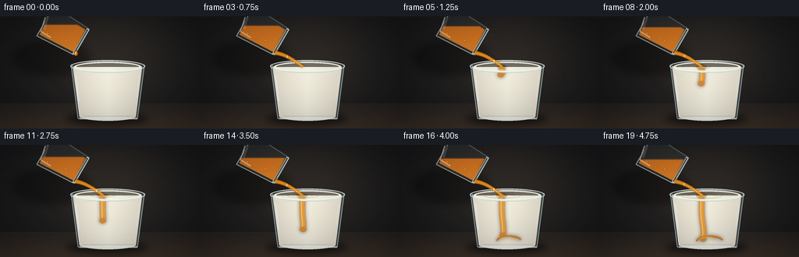
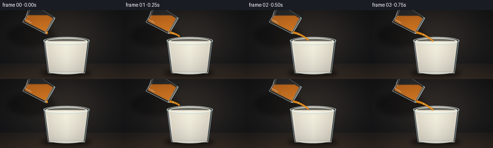

CODING AGENTS AS PIXEL WORLD MODELS
traex/GPT-5.6-Sol · phygen_137
点击播放 · 原生 RGB 像素
逐轮保存的候选
回放视频、检查图与代码变化。
每份候选均可单独播放。实际图片检查记录在下方工具轨迹中。
候选 01播放与检查图
点击播放 · 原生 RGB 像素

展开代码变化
--- 上一保存版本
+++ 本次保存版本
@@ -0,0 +1,248 @@
+from pathlib import Path
+import math
+import numpy as np
+from PIL import Image, ImageDraw, ImageFilter
+import artifact_io
+
+# Procedural studio animation: a tilted clear honey glass pours into milk.
+W,H,N = 256,144,20
+S=4
+WS,HS=W*S,H*S
+rng=np.random.default_rng(137)
+
+def sc(v): return int(round(v*S))
+def pts(seq): return [(sc(x),sc(y)) for x,y in seq]
+def rgba_layer(): return Image.new('RGBA',(WS,HS),(0,0,0,0))
+def ellipse(d, box, **kw): d.ellipse(tuple(sc(x) for x in box), **kw)
+def polygon(d, p, **kw): d.polygon(pts(p), **kw)
+def line(d,p,fill,width=1,joint='curve'): d.line(pts(p),fill=fill,width=max(1,sc(width)),joint=joint)
+
+def composite(base, layer): return Image.alpha_composite(base,layer)
+
+def soft_ellipse(base, box, color, blur):
+ lay=rgba_layer(); d=ImageDraw.Draw(lay); ellipse(d,box,fill=color)
+ return composite(base,lay.filter(ImageFilter.GaussianBlur(sc(blur))))
+
+def bezier(p0,p1,p2,t):
+ q=1-t
+ return (q*q*p0[0]+2*q*t*p1[0]+t*t*p2[0], q*q*p0[1]+2*q*t*p1[1]+t*t*p2[1])
+
+def tapered_ribbon(p0,p1,p2,tmax,w0,w1,steps=38):
+ ts=np.linspace(0,tmax,max(3,int(steps*tmax)+2))
+ centers=[bezier(p0,p1,p2,float(t)) for t in ts]
+ left=[]; right=[]
+ for i,(x,y) in enumerate(centers):
+ if i==0: dx,dy=centers[1][0]-x,centers[1][1]-y
+ elif i==len(centers)-1: dx,dy=x-centers[i-1][0],y-centers[i-1][1]
+ else: dx,dy=centers[i+1][0]-centers[i-1][0], centers[i+1][1]-centers[i-1][1]
+ l=max(1e-6,math.hypot(dx,dy)); nx,ny=-dy/l,dx/l
+ w=(w0+(w1-w0)*(i/(len(centers)-1)))/2
+ left.append((x+nx*w,y+ny*w)); right.append((x-nx*w,y-ny*w))
+ return left+right[::-1],centers
+
+def background(frame):
+ yy,xx=np.mgrid[0:HS,0:WS]
+ # Charcoal-to-warm-brown studio gradient with a soft spotlight behind the glasses.
+ x=xx/S; y=yy/S
+ radial=np.exp(-(((x-137)/92)**2+((y-54)/72)**2))
+ table=np.clip((y-113)/31,0,1)
+ r=23+24*radial+30*table
+ g=24+18*radial+20*table
+ b=26+12*radial+12*table
+ # fixed extremely fine film texture, prevents banding without flicker
+ noise=rng.normal(0,0.7,(HS,WS))
+ arr=np.stack([r+noise,g+noise,b+noise],axis=-1).clip(0,255).astype(np.uint8)
+ return Image.fromarray(arr,'RGB').convert('RGBA')
+
+def draw_table(base):
+ # soft horizon and grounding shadows
+ lay=rgba_layer(); d=ImageDraw.Draw(lay)
+ polygon(d,[(0,112),(256,112),(256,144),(0,144)],fill=(92,68,49,40))
+ line(d,[(0,112),(256,112)],fill=(210,174,125,25),width=.6)
+ base=composite(base,lay)
+ base=soft_ellipse(base,(84,123,190,140),(0,0,0,135),4.5)
+ base=soft_ellipse(base,(15,29,116,77),(0,0,0,85),5)
+ return base
+
+def draw_tilted_honey_glass(base,f):
+ # A recognizable clear straight-sided tumbler, tipped about 30 degrees.
+ outer=[(69,-13),(47,25),(94,49),(114,16)]
+ inner=[(68,-8),(51,23),(94,45),(109,17)]
+ mask=Image.new('L',(WS,HS),0); md=ImageDraw.Draw(mask)
+ polygon(md,inner,fill=255)
+ # honey level slowly falls as it pours; gravity keeps its free surface horizontal.
+ hy=10.8+0.43*f
+ honey=rgba_layer()
+ ha=np.zeros((HS,WS,4),dtype=np.uint8)
+ yy=np.arange(HS)[:,None]/S
+ # warm translucent depth gradient
+ ha[...,0]=np.clip(207+30*(yy/144),0,255).astype(np.uint8)
+ ha[...,1]=np.clip(102+40*(yy/144),0,255).astype(np.uint8)
+ ha[...,2]=np.clip(17+12*(yy/144),0,255).astype(np.uint8)
+ ha[...,3]=np.where(yy>=hy,218,0).astype(np.uint8)
+ honey=Image.fromarray(ha,'RGBA'); honey.putalpha(Image.fromarray(np.minimum(np.array(honey.getchannel('A')),np.array(mask)).astype(np.uint8),'L'))
+ # slight golden glow within the clear vessel
+ glow=honey.filter(ImageFilter.GaussianBlur(sc(1.0)))
+ base=composite(base,glow); base=composite(base,honey)
+ # bubbles suspended in the viscous honey, moving coherently with the glass
+ bub=rgba_layer(); d=ImageDraw.Draw(bub)
+ for i,(x,y,r) in enumerate([(61,22,1.8),(72,28,1.25),(84,31,1.5),(55,16,1.0)]):
+ if y>hy+2:
+ ellipse(d,(x-r,y-r,x+r,y+r),fill=(255,203,86,65),outline=(105,47,6,90),width=sc(.45))
+ ellipse(d,(x-r*.45,y-r*.55,x,y-r*.1),fill=(255,244,196,130))
+ bub.putalpha(Image.fromarray(np.minimum(np.array(bub.getchannel('A')),np.array(mask)).astype(np.uint8),'L'))
+ base=composite(base,bub)
+ # glass body wash, outlines, lip and highlights
+ lay=rgba_layer(); d=ImageDraw.Draw(lay)
+ polygon(d,outer,fill=(189,219,222,18))
+ line(d,[outer[0],outer[1],outer[2]],fill=(225,244,242,150),width=1.25)
+ line(d,[outer[0],outer[3],outer[2]],fill=(136,165,171,120),width=1.25)
+ line(d,[(51,23),(94,45)],fill=(255,231,176,100),width=.7)
+ # brightest long reflection
+ line(d,[(58,1),(52,19),(65,27)],fill=(255,255,244,155),width=1.25)
+ line(d,[(61,1),(56,16)],fill=(255,255,255,50),width=3.2)
+ # diagonal mouth/rim, viewed edge-on
+ line(d,[(113,16),(94,49)],fill=(219,239,239,205),width=4.1)
+ line(d,[(112,17),(95,47)],fill=(56,49,38,125),width=1.7)
+ line(d,[(111,18),(96,46)],fill=(255,238,197,120),width=.65)
+ # amber liquid edge along the bottom lip
+ line(d,[(99,43.5),(95.5,47)],fill=(225,122,18,210),width=2.1)
+ base=composite(base,lay)
+ return base
+
+def milk_mask_image():
+ m=Image.new('L',(WS,HS),0); d=ImageDraw.Draw(m)
+ polygon(d,[(94,65),(182,65),(174,129),(102,129)],fill=255)
+ ellipse(d,(102,122,174,134),fill=255)
+ return m
+
+MILK_MASK=milk_mask_image()
+
+def draw_milk_glass(base,f):
+ contact=max(0.0,min(1.0,(f-3)/3))
+ age=max(0,f-3)
+ # glass silhouette behind liquid
+ lay=rgba_layer(); d=ImageDraw.Draw(lay)
+ polygon(d,[(91,61),(185,61),(176,132),(100,132)],fill=(180,208,212,18))
+ base=composite(base,lay)
+ # milk body, softly shaded from ivory center to cooler edges
+ arr=np.zeros((HS,WS,4),dtype=np.uint8)
+ yy,xx=np.mgrid[0:HS,0:WS]; x=xx/S; y=yy/S
+ edge=np.clip(np.abs(x-138)/45,0,1)
+ vert=np.clip((y-64)/70,0,1)
+ arr[...,0]=np.clip(244-20*edge-8*vert,0,255)
+ arr[...,1]=np.clip(240-23*edge-7*vert,0,255)
+ arr[...,2]=np.clip(222-22*edge-3*vert,0,255)
+ arr[...,3]=238
+ milk=Image.fromarray(arr,'RGBA'); milk.putalpha(MILK_MASK)
+ base=composite(base,milk)
+ # Golden honey visible as a dense, slowly sinking ribbon through the near side of milk.
+ if age>0:
+ plume=rgba_layer(); pd=ImageDraw.Draw(plume)
+ length=min(53, age*3.7)
+ samples=[]
+ for j in range(45):
+ q=j/44; py=67+length*q
+ # viscous curl grows with time, lower end swings and begins to coil
+ px=131 + 2.0*math.sin(q*5.0+f*.15)*q + 5.7*math.sin(q*2.7+0.5)*q*q
+ samples.append((px,py))
+ # diffused amber transmitted through opaque milk
+ line(pd,samples,fill=(196,105,17,95),width=8.5)
+ line(pd,samples,fill=(231,142,28,170),width=4.3)
+ line(pd,[(x-1.0,y) for x,y in samples],fill=(255,205,83,155),width=1.15)
+ # a heavy curled bulb at the leading end
+ ex,ey=samples[-1]
+ ellipse(pd,(ex-4.5,ey-2.8,ex+4.5,ey+4.2),fill=(206,109,12,145))
+ # accumulating honey swirl on lower milk once it arrives
+ if length>43:
+ grow=(length-43)/10
+ arcbox=tuple(sc(v) for v in (124,116,154+grow*5,128+grow*2))
+ pd.arc(arcbox,start=170,end=350,fill=(196,99,10,155),width=sc(3.0))
+ pd.arc(tuple(sc(v) for v in (128,118,149,126)),start=190,end=355,fill=(255,181,44,120),width=sc(1.1))
+ plume.putalpha(Image.fromarray(np.minimum(np.array(plume.getchannel('A')),np.array(MILK_MASK)).astype(np.uint8),'L'))
+ haze=plume.filter(ImageFilter.GaussianBlur(sc(2.2)))
+ base=composite(base,haze); base=composite(base,plume)
+ # top milk surface and impact ripples
+ surf=rgba_layer(); d=ImageDraw.Draw(surf)
+ ellipse(d,(94,57.5,182,72.5),fill=(249,247,230,238),outline=(164,177,169,150),width=sc(.8))
+ ellipse(d,(98,60,178,69.5),fill=(255,253,237,72))
+ if contact>0:
+ # indentation and warm impact spot
+ ellipse(d,(127-contact*3,62-contact*.4,135+contact*3,68+contact*.4),fill=(179,115,43,int(100*contact)))
+ ellipse(d,(129.3,63.1,133.7,67.6),fill=(225,152,42,int(190*contact)))
+ r=min(26,3+age*1.55)
+ # thin elliptical ripples travelling across the surface
+ for k,a in [(0,120),(7,70)]:
+ rr=max(2,r-k)
+ if rr>2:
+ d.ellipse((sc(132-rr),sc(65-rr*.16),sc(132+rr),sc(65+rr*.16)),outline=(173,145,93,int(a*contact)),width=sc(.65))
+ base=composite(base,surf)
+ # front glass walls, base thickness, refractions and clean highlights
+ lay=rgba_layer(); d=ImageDraw.Draw(lay)
+ line(d,[(91,62),(100,131),(176,131),(185,62)],fill=(184,211,214,170),width=1.2)
+ line(d,[(93,63),(102,129)],fill=(255,255,255,185),width=1.05)
+ line(d,[(183,63),(175,129)],fill=(85,111,118,110),width=1.0)
+ line(d,[(102,131),(176,131)],fill=(229,240,234,185),width=2.3)
+ line(d,[(106,128),(171,128)],fill=(114,128,122,70),width=.65)
+ line(d,[(97,75),(101,109)],fill=(255,255,255,90),width=1.4)
+ line(d,[(178,75),(175,105)],fill=(255,255,255,45),width=1.0)
+ # rim glass catches light above milk
+ d.ellipse((sc(90),sc(56),sc(186),sc(72)),outline=(214,234,235,210),width=sc(1.45))
+ d.arc((sc(91),sc(56.5),sc(185),sc(71.5)),180,359,fill=(255,255,255,180),width=sc(.75))
+ base=composite(base,lay)
+ return base
+
+def draw_stream(base,f):
+ p0=(96.5,46.8)
+ p1=(111.5+0.5*math.sin(f*.55),48.7)
+ p2=(131.5+0.45*math.sin(f*.7),64.8)
+ if f==0:
+ # bead gathering on the lower lip
+ lay=rgba_layer(); d=ImageDraw.Draw(lay)
+ ellipse(d,(94.8,44.5,99.8,50.7),fill=(226,129,20,225),outline=(116,55,4,180),width=sc(.5))
+ ellipse(d,(96,45.1,97.4,48.2),fill=(255,226,132,200))
+ return composite(base,lay)
+ tmax=min(1.0,0.26+0.31*f)
+ wob=.28*math.sin(f*.9)
+ p1=(p1[0]+wob,p1[1])
+ ribbon,centers=tapered_ribbon(p0,p1,p2,tmax,5.0,3.15,46)
+ glow=rgba_layer(); gd=ImageDraw.Draw(glow)
+ polygon(gd,ribbon,fill=(244,151,31,95))
+ base=composite(base,glow.filter(ImageFilter.GaussianBlur(sc(1.4))))
+ lay=rgba_layer(); d=ImageDraw.Draw(lay)
+ polygon(d,ribbon,fill=(221,119,14,238))
+ line(d,centers,fill=(255,190,52,185),width=1.55)
+ # traveling bright glint emphasizes thick, viscous downward flow
+ gl=(f*.13)%0.72+0.08
+ if gl<tmax:
+ gx,gy=bezier(p0,p1,p2,gl)
+ ellipse(d,(gx-.7,gy-1.7,gx+.7,gy+1.7),fill=(255,239,174,205))
+ if tmax<1:
+ tx,ty=centers[-1]
+ ellipse(d,(tx-1.9,ty-1.2,tx+1.9,ty+2.4),fill=(236,137,20,230))
+ base=composite(base,lay)
+ return base
+
+def render_frame(f):
+ base=background(f)
+ base=draw_table(base)
+ # source glass is behind the receiving glass; stream overlays both naturally
+ base=draw_tilted_honey_glass(base,f)
+ base=draw_milk_glass(base,f)
+ base=draw_stream(base,f)
+ # restrained vignette and warm cinematic grade
+ arr=np.array(base.convert('RGB')).astype(np.float32)
+ yy,xx=np.mgrid[0:HS,0:WS]; nx=(xx-WS/2)/(WS/2); ny=(yy-HS/2)/(HS/2)
+ vig=np.clip(1-0.16*(nx*nx+ny*ny),.72,1)[...,None]
+ arr*=vig
+ # downsample gives antialiased glass contours and tiny highlights
+ im=Image.fromarray(np.clip(arr,0,255).astype(np.uint8),'RGB').resize((W,H),Image.Resampling.LANCZOS)
+ return np.array(im,dtype=np.uint8)
+
+def main():
+ frames=np.stack([render_frame(i) for i in range(N)],axis=0)
+ artifact_io.save(frames,Path(__file__).resolve().parent)
+ print('saved',frames.shape,frames.dtype)
+
+if __name__=='__main__':
+ main()
可观测工具轨迹
实际执行的命令与返回图片。
命令 1exit 0
/bin/bash -lc "cat prompt.txt && printf '\\n---RULES---\\n' && cat GENERATION_RULES.md && printf '\\n---SPEC---\\n' && cat task_spec.json"
命令 2exit 0
/bin/bash -lc "find . -maxdepth 2 -type f -printf '%p\\n' | sort && printf '\\n--- bins ---\\n' && command -v ffmpeg && command -v blender || true && command -v python3"
命令 3exit 0
/bin/bash -lc 'cat artifact_io.py'
命令 4exit 0
/bin/bash -lc "python3 - <<'PY'
import PIL,numpy
print('PIL',PIL.__version__,'numpy',numpy.__version__)
PY"命令 5exit 0
/bin/bash -lc "cat > generate.py <<'PY'
from pathlib import Path
import math
import numpy as np
from PIL import Image, ImageDraw, ImageFilter
import artifact_io
# Procedural studio animation: a tilted clear honey glass pours into milk.
W,H,N = 256,144,20
S=4
WS,HS=W*S,H*S
rng=np.random.default_rng(137)
def sc(v): return int(round(v*S))
def pts(seq): return [(sc(x),sc(y)) for x,y in seq]
def rgba_layer(): return Image.new('RGBA',(WS,HS),(0,0,0,0))
def ellipse(d, box, **kw): d.ellipse(tuple(sc(x) for x in box), **kw)
def polygon(d, p, **kw): d.polygon(pts(p), **kw)
def line(d,p,fill,width=1,joint='curve'): d.line(pts(p),fill=fill,width=max(1,sc(width)),joint=joint)
def composite(base, layer): return Image.alpha_composite(base,layer)
def soft_ellipse(base, box, color, blur):
lay=rgba_layer(); d=ImageDraw.Draw(lay); ellipse(d,box,fill=color)
return composite(base,lay.filter(ImageFilter.GaussianBlur(sc(blur))))
def bezier(p0,p1,p2,t):
q=1-t
return (q*q*p0[0]+2*q*t*p1[0]+t*t*p2[0], q*q*p0[1]+2*q*t*p1[1]+t*t*p2[1])
def tapered_ribbon(p0,p1,p2,tmax,w0,w1,steps=38):
ts=np.linspace(0,tmax,max(3,int(steps*tmax)+2))
centers=[bezier(p0,p1,p2,float(t)) for t in ts]
left=[]; right=[]
for i,(x,y) in enumerate(centers):
if i==0: dx,dy=centers[1][0]-x,centers[1][1]-y
elif i==len(centers)-1: dx,dy=x-centers[i-1][0],y-centers[i-1][1]
else: dx,dy=centers[i+1][0]-centers[i-1][0], centers[i+1][1]-centers[i-1][1]
l=max(1e-6,math.hypot(dx,dy)); nx,ny=-dy/l,dx/l
w=(w0+(w1-w0)*(i/(len(centers)-1)))/2
left.append((x+nx*w,y+ny*w)); right.append((x-nx*w,y-ny*w))
return left+right[::-1],centers
def background(frame):
yy,xx=np.mgrid[0:HS,0:WS]
# Charcoal-to-warm-brown studio gradient with a soft spotlight behind the glasses.
x=xx/S; y=yy/S
radial=np.exp(-(((x-137)/92)**2+((y-54)/72)**2))
table=np.clip((y-113)/31,0,1)
r=23+24*radial+30*table
g=24+18*radial+20*table
b=26+12*radial+12*table
# fixed extremely fine film texture, prevents banding without flicker
noise=rng.normal(0,0.7,(HS,WS))
arr=np.stack([r+noise,g+noise,b+noise],axis=-1).clip(0,255).astype(np.uint8)
return Image.fromarray(arr,'RGB').convert('RGBA')
def draw_table(base):
# soft horizon and grounding shadows
lay=rgba_layer(); d=ImageDraw.Draw(lay)
polygon(d,[(0,112),(256,112),(256,144),(0,144)],fill=(92,68,49,40))
line(d,[(0,112),(256,112)],fill=(210,174,125,25),width=.6)
base=composite(base,lay)
base=soft_ellipse(base,(84,123,190,140),(0,0,0,135),4.5)
base=soft_ellipse(base,(15,29,116,77),(0,0,0,85),5)
return base
def draw_tilted_honey_glass(base,f):
# A recognizable clear straight-sided tumbler, tipped about 30 degrees.
outer=[(69,-13),(47,25),(94,49),(114,16)]
inner=[(68,-8),(51,23),(94,45),(109,17)]
mask=Image.new('L',(WS,HS),0); md=ImageDraw.Draw(mask)
polygon(md,inner,fill=255)
# honey level slowly falls as it pours; gravity keeps its free surface horizontal.
hy=10.8+0.43*f
honey=rgba_layer()
ha=np.zeros((HS,WS,4),dtype=np.uint8)
yy=np.arange(HS)[:,None]/S
# warm translucent depth gradient
ha[...,0]=np.clip(207+30*(yy/144),0,255).astype(np.uint8)
ha[...,1]=np.clip(102+40*(yy/144),0,255).astype(np.uint8)
ha[...,2]=np.clip(17+12*(yy/144),0,255).astype(np.uint8)
ha[...,3]=np.where(yy>=hy,218,0).astype(np.uint8)
honey=Image.fromarray(ha,'RGBA'); honey.putalpha(Image.fromarray(np.minimum(np.array(honey.getchannel('A')),np.array(mask)).astype(np.uint8),'L'))
# slight golden glow within the clear vessel
glow=honey.filter(ImageFilter.GaussianBlur(sc(1.0)))
base=composite(base,glow); base=composite(base,honey)
# bubbles suspended in the viscous honey, moving coherently with the glass
bub=rgba_layer(); d=ImageDraw.Draw(bub)
for i,(x,y,r) in enumerate([(61,22,1.8),(72,28,1.25),(84,31,1.5),(55,16,1.0)]):
if y>hy+2:
ellipse(d,(x-r,y-r,x+r,y+r),fill=(255,203,86,65),outline=(105,47,6,90),width=sc(.45))
ellipse(d,(x-r*.45,y-r*.55,x,y-r*.1),fill=(255,244,196,130))
bub.putalpha(Image.fromarray(np.minimum(np.array(bub.getchannel('A')),np.array(mask)).astype(np.uint8),'L'))
base=composite(base,bub)
# glass body wash, outlines, lip and highlights
lay=rgba_layer(); d=ImageDraw.Draw(lay)
polygon(d,outer,fill=(189,219,222,18))
line(d,[outer[0],outer[1],outer[2]],fill=(225,244,242,150),width=1.25)
line(d,[outer[0],outer[3],outer[2]],fill=(136,165,171,120),width=1.25)
line(d,[(51,23),(94,45)],fill=(255,231,176,100),width=.7)
# brightest long reflection
line(d,[(58,1),(52,19),(65,27)],fill=(255,255,244,155),width=1.25)
line(d,[(61,1),(56,16)],fill=(255,255,255,50),width=3.2)
# diagonal mouth/rim, viewed edge-on
line(d,[(113,16),(94,49)],fill=(219,239,239,205),width=4.1)
line(d,[(112,17),(95,47)],fill=(56,49,38,125),width=1.7)
line(d,[(111,18),(96,46)],fill=(255,238,197,120),width=.65)
# amber liquid edge along the bottom lip
line(d,[(99,43.5),(95.5,47)],fill=(225,122,18,210),width=2.1)
base=composite(base,lay)
return base
def milk_mask_image():
m=Image.new('L',(WS,HS),0); d=ImageDraw.Draw(m)
polygon(d,[(94,65),(182,65),(174,129),(102,129)],fill=255)
ellipse(d,(102,122,174,134),fill=255)
return m
MILK_MASK=milk_mask_image()
def draw_milk_glass(base,f):
contact=max(0.0,min(1.0,(f-3)/3))
age=max(0,f-3)
# glass silhouette behind liquid
lay=rgba_layer(); d=ImageDraw.Draw(lay)
polygon(d,[(91,61),(185,61),(176,132),(100,132)],fill=(180,208,212,18))
base=composite(base,lay)
# milk body, softly shaded from ivory center to cooler edges
arr=np.zeros((HS,WS,4),dtype=np.uint8)
yy,xx=np.mgrid[0:HS,0:WS]; x=xx/S; y=yy/S
edge=np.clip(np.abs(x-138)/45,0,1)
vert=np.clip((y-64)/70,0,1)
arr[...,0]=np.clip(244-20*edge-8*vert,0,255)
arr[...,1]=np.clip(240-23*edge-7*vert,0,255)
arr[...,2]=np.clip(222-22*edge-3*vert,0,255)
arr[...,3]=238
milk=Image.fromarray(arr,'RGBA'); milk.putalpha(MILK_MASK)
base=composite(base,milk)
# Golden honey visible as a dense, slowly sinking ribbon through the near side of milk.
if age>0:
plume=rgba_layer(); pd=ImageDraw.Draw(plume)
length=min(53, age*3.7)
samples=[]
for j in range(45):
q=j/44; py=67+length*q
# viscous curl grows with time, lower end swings and begins to coil
px=131 + 2.0*math.sin(q*5.0+f*.15)*q + 5.7*math.sin(q*2.7+0.5)*q*q
samples.append((px,py))
# diffused amber transmitted through opaque milk
line(pd,samples,fill=(196,105,17,95),width=8.5)
line(pd,samples,fill=(231,142,28,170),width=4.3)
line(pd,[(x-1.0,y) for x,y in samples],fill=(255,205,83,155),width=1.15)
# a heavy curled bulb at the leading end
ex,ey=samples[-1]
ellipse(pd,(ex-4.5,ey-2.8,ex+4.5,ey+4.2),fill=(206,109,12,145))
# accumulating honey swirl on lower milk once it arrives
if length>43:
grow=(length-43)/10
arcbox=tuple(sc(v) for v in (124,116,154+grow*5,128+grow*2))
pd.arc(arcbox,start=170,end=350,fill=(196,99,10,155),width=sc(3.0))
pd.arc(tuple(sc(v) for v in (128,118,149,126)),start=190,end=355,fill=(255,181,44,120),width=sc(1.1))
plume.putalpha(Image.fromarray(np.minimum(np.array(plume.getchannel('A')),np.array(MILK_MASK)).astype(np.uint8),'L'))
haze=plume.filter(ImageFilter.GaussianBlur(sc(2.2)))
base=composite(base,haze); base=composite(base,plume)
# top milk surface and impact ripples
surf=rgba_layer(); d=ImageDraw.Draw(surf)
ellipse(d,(94,57.5,182,72.5),fill=(249,247,230,238),outline=(164,177,169,150),width=sc(.8))
ellipse(d,(98,60,178,69.5),fill=(255,253,237,72))
if contact>0:
# indentation and warm impact spot
ellipse(d,(127-contact*3,62-contact*.4,135+contact*3,68+contact*.4),fill=(179,115,43,int(100*contact)))
ellipse(d,(129.3,63.1,133.7,67.6),fill=(225,152,42,int(190*contact)))
r=min(26,3+age*1.55)
# thin elliptical ripples travelling across the surface
for k,a in [(0,120),(7,70)]:
rr=max(2,r-k)
if rr>2:
d.ellipse((sc(132-rr),sc(65-rr*.16),sc(132+rr),sc(65+rr*.16)),outline=(173,145,93,int(a*contact)),width=sc(.65))
base=composite(base,surf)
# front glass walls, base thickness, refractions and clean highlights
lay=rgba_layer(); d=ImageDraw.Draw(lay)
line(d,[(91,62),(100,131),(176,131),(185,62)],fill=(184,211,214,170),width=1.2)
line(d,[(93,63),(102,129)],fill=(255,255,255,185),width=1.05)
line(d,[(183,63),(175,129)],fill=(85,111,118,110),width=1.0)
line(d,[(102,131),(176,131)],fill=(229,240,234,185),width=2.3)
line(d,[(106,128),(171,128)],fill=(114,128,122,70),width=.65)
line(d,[(97,75),(101,109)],fill=(255,255,255,90),width=1.4)
line(d,[(178,75),(175,105)],fill=(255,255,255,45),width=1.0)
# rim glass catches light above milk
d.ellipse((sc(90),sc(56),sc(186),sc(72)),outline=(214,234,235,210),width=sc(1.45))
d.arc((sc(91),sc(56.5),sc(185),sc(71.5)),180,359,fill=(255,255,255,180),width=sc(.75))
base=composite(base,lay)
return base
def draw_stream(base,f):
p0=(96.5,46.8)
p1=(111.5+0.5*math.sin(f*.55),48.7)
p2=(131.5+0.45*math.sin(f*.7),64.8)
if f==0:
# bead gathering on the lower lip
lay=rgba_layer(); d=ImageDraw.Draw(lay)
ellipse(d,(94.8,44.5,99.8,50.7),fill=(226,129,20,225),outline=(116,55,4,180),width=sc(.5))
ellipse(d,(96,45.1,97.4,48.2),fill=(255,226,132,200))
return composite(base,lay)
tmax=min(1.0,0.26+0.31*f)
wob=.28*math.sin(f*.9)
p1=(p1[0]+wob,p1[1])
ribbon,centers=tapered_ribbon(p0,p1,p2,tmax,5.0,3.15,46)
glow=rgba_layer(); gd=ImageDraw.Draw(glow)
polygon(gd,ribbon,fill=(244,151,31,95))
base=composite(base,glow.filter(ImageFilter.GaussianBlur(sc(1.4))))
lay=rgba_layer(); d=ImageDraw.Draw(lay)
polygon(d,ribbon,fill=(221,119,14,238))
line(d,centers,fill=(255,190,52,185),width=1.55)
# traveling bright glint emphasizes thick, viscous downward flow
gl=(f*.13)%0.72+0.08
if gl<tmax:
gx,gy=bezier(p0,p1,p2,gl)
ellipse(d,(gx-.7,gy-1.7,gx+.7,gy+1.7),fill=(255,239,174,205))
if tmax<1:
tx,ty=centers[-1]
ellipse(d,(tx-1.9,ty-1.2,tx+1.9,ty+2.4),fill=(236,137,20,230))
base=composite(base,lay)
return base
def render_frame(f):
base=background(f)
base=draw_table(base)
# source glass is behind the receiving glass; stream overlays both naturally
base=draw_tilted_honey_glass(base,f)
base=draw_milk_glass(base,f)
base=draw_stream(base,f)
# restrained vignette and warm cinematic grade
arr=np.array(base.convert('RGB')).astype(np.float32)
yy,xx=np.mgrid[0:HS,0:WS]; nx=(xx-WS/2)/(WS/2); ny=(yy-HS/2)/(HS/2)
vig=np.clip(1-0.16*(nx*nx+ny*ny),.72,1)[...,None]
arr*=vig
# downsample gives antialiased glass contours and tiny highlights
im=Image.fromarray(np.clip(arr,0,255).astype(np.uint8),'RGB').resize((W,H),Image.Resampling.LANCZOS)
return np.array(im,dtype=np.uint8)
def main():
frames=np.stack([render_frame(i) for i in range(N)],axis=0)
artifact_io.save(frames,Path(__file__).resolve().parent)
print('saved',frames.shape,frames.dtype)
if __name__=='__main__':
main()
PY
python3 generate.py"命令 6exit 0
/bin/bash -lc "python3 - <<'PY'
from pathlib import Path
import numpy as np
from PIL import Image
p=Path('.')
z=np.load('pixels.npz')['pixels']
files=sorted((p/'frames').glob('*.png'))
print('pixels',z.shape,z.dtype,'frames',len(files),'first',Image.open(files[0]).size,Image.open(files[0]).mode)
print('artifacts',[(x.name,x.stat().st_size) for x in [p/'pixels.npz',p/'index.html',p/'inspection.png',p/'transition_check.png',p/'generate.py']])
PY"视觉工具实际返回图片 1

视觉工具实际返回图片 2

保存候选 1 份；完成命令 6 次；可验证图片返回 2 张。原始 API 响应与完整日志保留在本地。